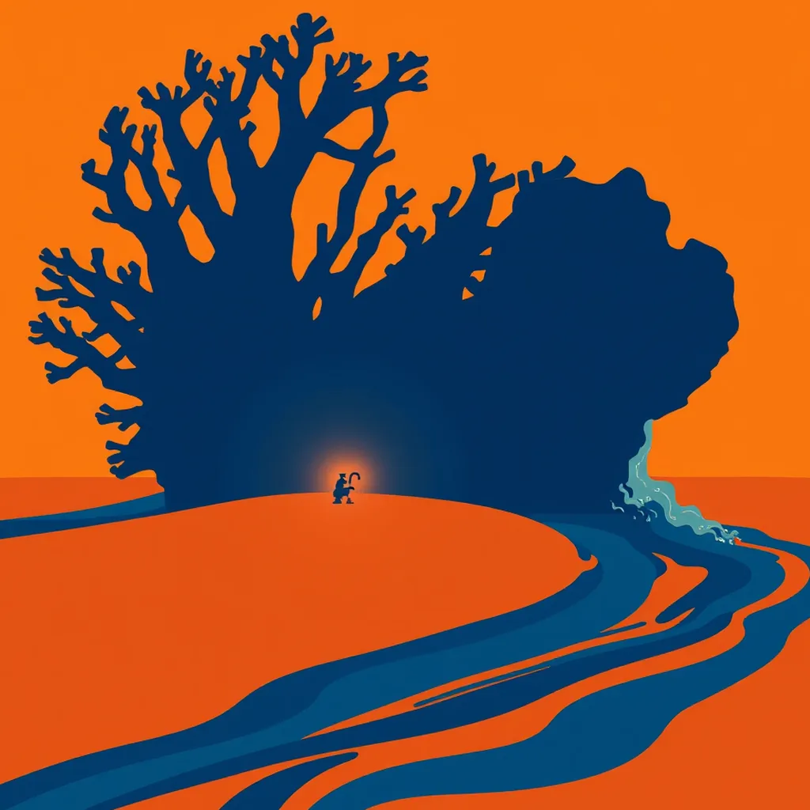

First Light ·
a coral frag on its rock waking as its polyps open under the lamp, one great coral head waking on the reef at dawn as the tide pours over it
Under white strips of light polyps flare out like pink mouths gorging on the beam. Glass walls hold the tide. Another tank breathes loud as currents spin against plastic waves. Then the ocean itself rises a great brown head shaking water pouring over its rim. The reef wakes deep and wide. Back to the bench, the small frag drinks from the tap still running. Grain of salt stuck in a crack. Fingertip finds the grit to brush it away.
How this piece was made
- 01Poem written byQwen3.5 9B recorded
Local model on one RTX 3070 Ti. It also critiques its own drafts and rewrites up to five times.
- 02Image prompt written byQwen3 8B recorded
Local model. It reads the poem and writes the picture brief.
- 03Image rendered byFLUX.1 [schnell] recorded
Local diffusion model on the same GPU. Several candidates per poem.
- 04Image chosen byClaude Opus 5.5 recorded
Claude, running as the corporation's blind art-critic. It scores every candidate and never writes a prompt.
- Poem drafts
- 1 of 5
- Poem self-score
- 7/10
- Image candidates
- 2
- Judge’s score
- 4/10
- Selection
- Highest-scoring on-subject candidate (did not clear the judge’s bar outright)
The image brief the local model wrote
A bold flat-colour screen-print poster, saturated and high-contrast, made of broad flat shapes with hard clean edges, every shape one solid colour cut like paper, with no shading, no gradient and no glow inside any shape, no photographic detail, no soft focus, no blur. Two colours own the whole image: a field of warm sand, ochre and rust, and cobalt blue for the moving water and nothing else. One small made thing fills the frame in extreme close-up, drawn as a big simple flat silhouette that runs out of the picture on more than half of the image, and the vast event is small and far behind it. The whole image is one continuous scene from edge to edge. Behind the main form one wide flat area of unbroken ochre rests the eye. Small things are crisp silhouettes. The subject: A colossal coral head, its branching silhouette a jagged coastline silhouette in cobalt blue, pours water over its rim as the tide rises. The spark, a small frag, glows faintly in ochre, its tap still running. A vast ochre field stretches behind, resting the eye. Light spills from the lamp, hitting the coral’s edge, casting flat cobalt streaks. No figures, no gradients, no detail beyond the event’s weighty outline.